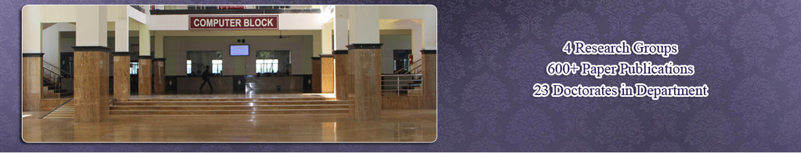
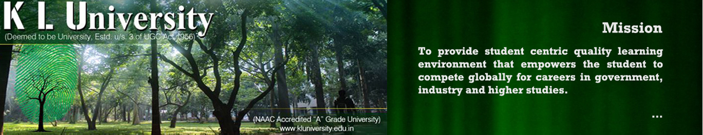
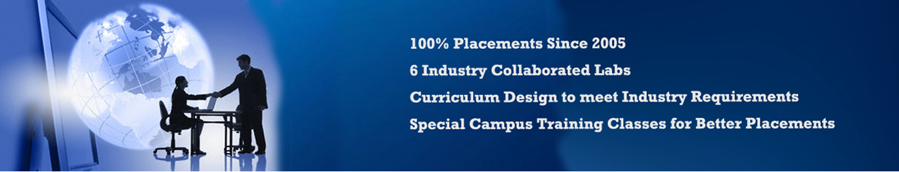
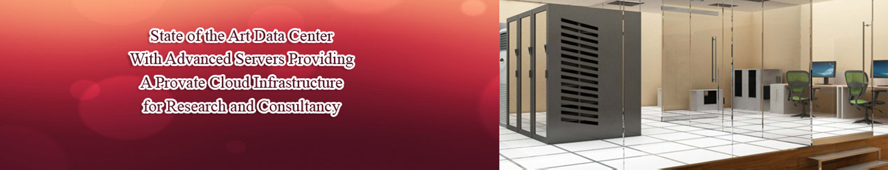

- 
- 
- 
-

- 
Department of Computer Science & Engineering (DST-FIST Sponsored Department)
List of Workshops/Guest Lectures/Seminars Conducted for the A.Y. 2016-2017
| SNO | Title of the Seminar/Workshop/Guest Lecture | Date Conducted | Organization that conducted the event | Name of the speaker |
| 1 | Evolution of IT Architectures | 30.09.2016 | Knowledge Engineering Research Group | Mr. G Ravi Kumar, Expert Technologist, Hewielt Packard Enterprise Product R & D, Bangalore |
| 2 | Model Driven Development | 16.09.2016 | Organized by SEA Club, Sponsored by DST | Dr. Y Raghu Reddy, Assoicate Professor & Head Software Engineering Research Centre, IIIT, Hyderabad |
| 3 | Model Driven Development | 16.09.2016 & 17.09.2016 | Organized by SEA Club, Sponsored by DST | Ms. G Manjusha, Solution Architect, Tech Mahendra |
| 4 | Model Driven Development | 16.09.2016 & 17.09.2016 | Organized by SEA Club, Sponsored by DST | Mr. K Srinivas Rao, Principal Solution Architect, Tech Mahendra |
| 5 | Network Security | 20.10.2016 | NSF Research Group | Dr. Rashmi Ranjan Rout, Assistant Professor,NIT, Warangal |
| 6 | Bit coins & Black Chains Technology | 24.10.2016 | NSF Research Group | Mr. Anil Kumar, Founder, ESF Labs & Team |
| 7 | IOT | 28.10.2016 | IOT Research Group | Mr. G Mangesh, B. Krishna Chaitanya, Mr. Ch. Yuktesh, IBM |
List of Workshops/Guest Lectures/Seminars Conducted for the A.Y. 2015-2016
| SNO | Title of the Seminar/Workshop/Guest Lecture | Date Conducted | Organization that conducted the event | Name of the speaker |
| 1 | A Guest Lecture on Towards an Ecosystem of usable Refactoring Tools | 2/9/2015 | Software Engineering Research GroupFor 3rd Year | Dr. Y Raghu Reddy, Assoc.Professor, IIIt, Hyderabad |
| 2 | A Guest Lecture on “The Theme of DBA roles and responsibilities by using Oracle Apps | 21/9/2015 | Dept. of CSE For 2nd & 3rd Years | Mr. Pathan Dariya Hussain, Tech. Lead, Infosys |
| 3 | A Guest Lecture on “Values and Morals in Governance” | 16/10/2015 | Dept. of CSEFor 3rd Year | Sri K. Bala Subrahamanyam, Sri B.Viswanadh Eerya, SC Railways, Sec’Bad |
| 4 | A Guest Lecture on “Recent Trends in Data Mining Technologies” | 30/10/2015 | Knowledge Engineering Research GroupFor 4th Year | Dr. R.B.V. Subrahmanyam, Assoc.Professor, NIT, Warangal |
List of Workshops/Guest Lectures/Seminars Conducted for the A.Y. 2014-2015
| S.NO | DATE | EVENT | Resource Person | Participants |
| 1 | 17.07.14 | Work shop on IBM Blue mix | Mr.Ch.Yuktesh, IT Specialist, IBM, Hyderabad. | 3rd & 4th Year B.Tech students and Staff |
| 2 | 21.07.14 | Orientation Program on Current Technologies | Dr. Srinivas Jonnalagadd and others from Siri IT Innovations Pvt.Ltd, Hyd. | 3rd year B Tech students |
| 3 | 01.08.14 | Guest Lecture on Mobile Computing and MS Program in US | Prof. Nelakuditi Sri Hari, Professor and Graduate Director, University of South Carolina, Columbia, SC 29208 | Final Year B.Tech Students |
| 4 | 11.08.14 | Guest Lecture on C-Programming concepts | Mr.S.MuniReddy, Sr.Manager, IBM-Labs, Bangalore | 3rd Year B. Tech Students |
| 5 | 11.08.14 | Guest Lecture on “Innovations in Processor Architecture”. | Dr. Madhu Mutyam, Asst. Professor, IIT, Madras and Alumni of KLCE | 4th year B.Tech students and CSE faculty |
| 6 | 17.10.14 | Interaction session on “Outreach” | Dr. M.Rama Subba Reddy, Professor and Dr. P. Ramakrishna, Asst.Professor, IIT-Madras, Chennai | 4th Year B.Tech students across all Branches of KLU |
| 7 | 03.11.14 | Guest Lecture on “Trends and Opportunities” | Dr. Prahlada Rao B B, Joint Director, C-DAC, Banglore | 4th Year B.Tech. Students and 1st Year M.Tech Students |
| 8 | 07.12.14 | Course based workshop on “Virtualization in Cloud Computing” | Sri S. Munireddy, Sr. Manager, IBM Labs, Banglore | M.Tech CSE students of all sections |
| 9 | 21.01.15&22.01.15 | Job Opportunities in the IT industry and career building in Knowledge Management | Mr. Ravi Kiran, Director of Knowledge Management, SAP labs, Banglore | B.Tech 3rd year students |
| 10 | 20.02.15 | Mobile Application Development based on Crowd Sourcing Model and Wireless Sensor Networks for Mobile Health Care | Dr. Siba Kumar Udgata, Professor, School of Computer and Information Sciences, University of Hyderabad | 2nd Year, 3rd Year and Final Year B. Tech students |
| 11 | 18.03.15 | A Workshop on IBM Blue mix tool | Mr. Ch. Yuktesh, IT Specialist, IBM | 3rd Year B.Tech CSE and ECM studetns |
| 12 | 18.03.15 | A workshop on Software Process Improvement through CMMI | Mr. K. Srinivasa Rao, Principal Solution Architect in Tech. Mahindra, Hyderabad | 3rd Year B.Tech students |
| 13 | 20.03.15 | A Guest Lecture on Mobile Communications | Mr. Darsi Srinivasa Rao, Technical Architect, Tech. Mahinda, Hyderabad. | M.Tech. CNS students |
| 14 | 27.03.15 | A Guest Lecture on Cloud Services | Mr. Muni Sekhar Reddy, Sr. Engineer, IBM, Banglore | M.Tech Cloud Computing Students and all the students of CC Research Group |
| 15 | 27.03.15 | A Orientation Program on Flexibility Options in K L University | Prof. N. Venkatram, Dean Academics, KLU | For All 2nd B.Tech students |
| 16 | 14.04.15 | Guest Lecture on “NOSQL Databases & Big Data Analytics”
|
- Dr.D.V.L.N Somayajulu | For 3rd B.Tech students |
List of Workshops/Guest Lectures/Seminars Conducted for the A.Y. 2013-2014
| S.NO | Name of the GL/SEM/WS | Date | Venue | Resource Person | No. of participants |
| 1 | AICTE Workshop on Research Methodology | 15-5-2013 | Jasmine Hall | Dr.K.Subramanyam Prof.P.s.AvadhaniProf. A.V.Dattateya Rao and Prof.R.R.L.Kantam | 180 |
| 2 | Workshop on Network Security Analysis | 17-5-2013 | Rose Hall | Prof. P.S.Avadhani | 50 |
| 3 | Guest Lecture on Developing and using Cloud Applications with .Net framework | 30-8-2013 | C521 | Mr. Pratap. K and his tem members from Microsoft | For all IV/IV B.Tech CSE Students |
| 4 | Guest lecture on Industrial applications using machine vision augmented reality | 23-12-2013 | Peacock Hall | Dr. P. Bhanu Prasad, Germany | 200 |
| 5 | Guest Lecture on Reduced Memory, low complexity embedded image compression algorithm using hierarchical listless DTT | 30-12-2013 | C521 | Dr.A.S.C.S. SASTRY, HOD, ECE | 150 |
| 6 | Guest Lecture on Cloud Computing | 30-12-2013 | Peacock Hall | Sri M. Muni Reddy, Manager, IBM Software Labs, Banglore | 200 |
| 7 | Guest Lecture on Big Data Analytics | 20-1-2014 | Peacock Hall | Prof. Sumanth Kumar | 150 |
| 8 | Guest Lecture on Software Project and Software Management | 24-1-2014 | Peacock Hall | Sri Y. Ganesh, Founder of HSL | 100 |
List of Workshops/Guest Lectures/Seminars Conducted for the A.Y. 2012-2013
| S.NO | Name of the GL/SEM/WS | Date | Venue | Resource Person | No. of participants |
| 1 | Guest Lecture on Semantic Web | 6-4-2013 | Peacock Hall | Sri B. Srivastav | 300 |
| 2 | Workshop on APP-FEST | 21-3-2013 | Microsoft Innovation Centre | Microsoft Personnel | 150 |
| 3 | Workshop on CSI-Funquiz-2013 | 9-2-2013 | New Seminar Hall | Prof. P. Trimurthy | 200 |
| 4 | Seminar on Requirement Engineering | 16-2-2013 | Jasmine Hall | Mr. Batia, TCS | 100 |
| 5 | Guest Lecture on Ethical Hacking | 26-3-2013 | Peacock Hall | Mr. Ankit Fadia | 350 |
| 6 | Workshop on Research Methodologies | 13-8-2012 to 18-8-2012 | M325 | Dr. K. Subrahmanyam | 20 |
List of Workshops/Guest Lectures/Seminars Conducted for the A.Y. 2011-2012
| S.NO | Name of the GL/SEM/WS | Date | Venue | Resource Person | No.of participants |
| 1 | Seminar on Cryptography and Web Security | 27-8-2012 to 31-8-2012 | Peacock Hall | Dr. Daniel | 416 |
| 2 | Guest Lecture on Entrepreneurship Development Programs | 1-2-2012 | Jasmine Hall | Mr. N.T. Naidu | 132 |
| 3 | Workshop on Information on Microsoft new Technologies | 28-9-2012 | New Seminar Hall | Mr. P. Indraneil and Guptha | 300 |
| 4 | Seminar on STEP ( Student Enhancement Program) | 26-9-2012 | Peacock Hall | Ms. Sandhya Kode | 250 |
| 5 | Workshop on Robotics | 3-8-2012 | New Seminar Hall | MrG. Lakshmi Vara Prasad | 72 |
| 6 | Workshop on Quality Service to Students for Higher Education and Career Development on HM CAT Coaching | 14-7-2011 | C525 | Mr. V.V.Kishore Kumar | 24 |
List of Workshops/Guest Lectures/Seminars Conducted for the A.Y. 2010-2011
| S.NO | Name of the GL/SEM/WS | Date | Venue | Resource Person | No.of participants |
| 1 | Seminar on Employability | 19-3-2011 | Peacock Hall | Mr.K. Raju | 9 |
| 2 | Workshop on Agile Serum Software Methodology | 19-3-2011 | Peacock Hall | MrDandpani Prasad | 14 |
| 3 | Seminar on Enhancing Employability | 19-3-2011 | Peacock Hall | Wd.Cdr. M.Murugesan | 25 |
| 4 | Seminar on Personality Development and Software Skills | 18-3-2011 | Peacock Hall | Prof. Ananda Rao | 25 |
| 5 | Workshop on Market Opportunities | 18-3-2011 | Peacock Hall | Mr. T. Sabha Pathy | 22 |
| 6 | Workshop on Android Software | 17-3-2011 | Peacock Hall | Mr. Suman Kumar | 22 |
| 7 | Guest Lecture on Pattern Analysis for Content-Based information Retrieval | 19-2-2011 | Sunflower Hall | Prof. C. Chandra Sekhar | 24 |
| 8 | Workshop on Fire and Safety Awareness | 10-2-2011 | M209 | Mr.Jhonson | 26 |
| 9 | Seminar on Project Management and Career Development | 20-12-2010 | Peacock Hall | Dr. V. Siva Rama Krishnaiah | 34 |
| 10 | Seminar on Career Opportunities | 28-8-2010 | Jasmine Hall | Prof. Narasimha | 32 |
List of Workshops/Guest Lectures/Seminars Conducted for the A.Y. 2009-2010
| S.NO | Name of the GL/SEM/WS | Date | Venue | Resource Person | No. of participants |
| 1 | Guest Lecture on Cloud Computing Service Oriented Architecture | 20-3-2010 | Peacock Hall | Prof. Himanshu Goyal | 94 |
| 2 | Introduction to Erwin | 20-3-2010 | Peacock Hall | Dr. Sekhar Muddana | 28 |
| 3 | Workshop on DB2 | 21-1-2010 | IBM Lab | Mr. Vikas Manoria | 49 |
| 4 | Workshop on Personality Development | 10-10-2009 | Peacock Hall | Prof. Krishna Kishore | 26 |
| 5 | Workshop on How to do Research | 18-9-2009 | Peacock Hall | Dr. P. Trimurthy | 26 |
| 6 | Workshop on DB2 | 22-8-2009 | IBM Lab | Mr. Mouri Kumar | 25 |
| 7 | Internship program by IBM | 11-7-2009 | Peacock Hall | Mr. Muni S. Reddy, Manager, IBM Labs, Benglore | 28 |
| 8 | Workshop on Live Real-Time Project in Virtual Industry | 29-7-2009 | New Seminar Hall | Prof. Atin | 26 |
| 9 | Guest Lecture on Informatica for Data Warehousing | 2-7-2009 | New Seminar Hall | Prof. Ch. Srinivas | 20 |